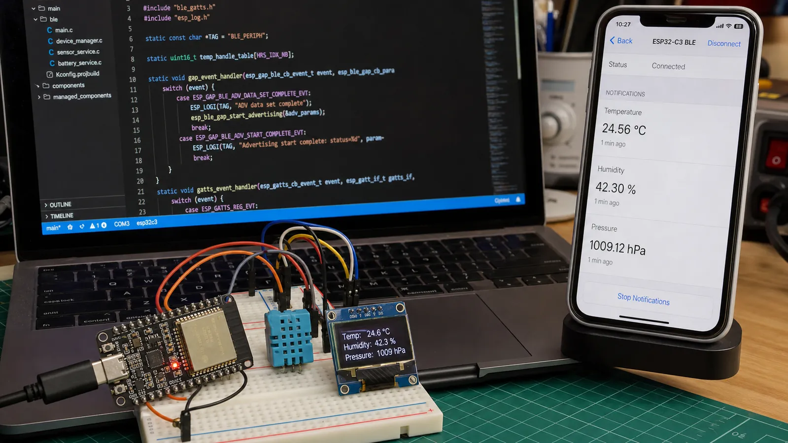

خانواده ESP32 راه سریعی برای تبدیل مفاهیم BLE به پروژه واقعی است. ESP-IDF دو Host Stack اصلی ارائه میدهد: Bluedroid برای Classic و LE و NimBLE بهعنوان گزینه سبکتر مخصوص LE. انتخاب را بر اساس قابلیت و حافظه انجام دهید.
اگر Bluetooth Classic و LE را همزمان نیاز دارید، Bluedroid مسیر طبیعی است. برای محصول فقط BLE، NimBLE معمولاً RAM و Flash کمتری میخواهد و API مشخصی برای GAP و GATT دارد. پیش از کپی مثال قدیمی، نسخه ESP-IDF و مستند همان نسخه را بررسی کنید.
کنترلر و Host را راهاندازی کنید، GAP callback یا event handler را ثبت کنید، Service و Characteristic بسازید و Advertising را پس از آمادهشدن GATT شروع کنید. رخداد اتصال، قطع، تغییر MTU و نوشتن CCCD را ثبت کنید. بعد از قطع، Advertising را طبق سیاست محصول دوباره آغاز کنید.
Central اسکن را با فیلتر UUID یا Manufacturer Data محدود میکند، دستگاه را متصل میکند، سرویس و Characteristic را Discover میکند و در صورت نیاز CCCD را مینویسد. آدرس تصادفی و تغییر آدرس باعث میشود تکیه بر رشته آدرس برای شناسایی محصول همیشه درست نباشد.
قبل از Notify بررسی کنید کلاینت آن را فعال کرده و اتصال هنوز معتبر است. برای چند اتصال، وضعیت CCCD، Handle اتصال، MTU و صف ارسال را جدا نگه دارید. در محصول باتریخور، Advertising Interval، Connection Parameter، Light Sleep و زمان نمونهبرداری را با هم تنظیم و اندازهگیری کنید.
هر یک ثانیه SHT31 را بخوانید، دما را به int16 با مقیاس صدم درجه تبدیل کنید و فقط اگر مقدار تغییر معنادار داشت Notify بفرستید. Characteristic تنظیم Interval را Writeable کنید و مقدار را در NVS ذخیره کنید. خطاهای I2C و قطع اتصال نباید حلقه اصلی را متوقف کنند.